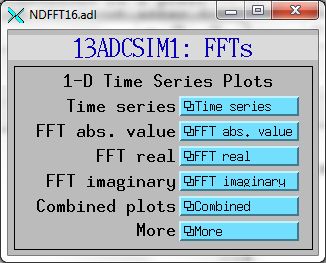

NDPluginFFT¶
| author: | Mark Rivers, University of Chicago |
|---|
Contents
Overview¶
This plugin computes 1-D or 2-D Fast Fourier Transforms (FFTs). It exports 1-D or 2-D NDArrays containing the absolute value of the FFT. It creates 1-D waveform records of the input, and the real, imaginary, and absolute values of the first row of the FFT. It also creates 1-D waveform records of the time and frequency axes, which are useful for plotting if the 1-D input represents a time-series. The plugin optionally does recursive averaging of the computed FFTs to increase the signal to noise.
The FFT algorithm used requires that the input array dimensions be a power of 2. The plugin will pad the array to the next larger power of 2 if the input array does not meet this requirement.
Todo
Fix links
The ADCSimDetector application simulates an 8-channel ADC with different waveforms. This application is useful for testing and demonstrating the NDPluginFFT plugin with 1-D NDArray input.
The simDetector application has a Sine simulation mode that generates images based on the sums and/or products of 4 sine waves. This can be used to generate images with well-defined frequency components in X and Y to test and demonstrate the NDPluginFFT plugin, as shown in the images below. The Peaks simulation mode can also be used to generate interesting frequency patterns, as shown in the images below. This application is thus useful for testing and demonstrating the NDPluginFFT plugin with 2-D NDArray input.
For 1-D FFTs the plugin exports a 1-D array containing the frequency values for each point. In order to construct this the plugin requires knowing the time interval between samples (TimePerPoint). This information normally comes from a database link to a record in the detector driver, but it can be manually specified as well.
NDPluginFFT inherits from NDPluginDriver. The NDPluginFFT class documentation describes this class in detail.
NDPluginFFT defines the following parameters. It also implements all of the standard plugin parameters from NDPluginDriver. The template files listed above provide access to these parameters, listed in the following tables.
|
Parameters for entire plugin.
Parameter Definitions in NDPluginFFT.h and EPICS Record Definitions in NDFFT.template |
||||||
| Parameter index variable | asyn interface | Access | Description | drvInfo string | EPICS record name | EPICS record type |
|---|---|---|---|---|---|---|
| FFTTimePerPoint | asynFloat64 | r/w | The time interval between samples in the waveforms from the driver. This value is normally updated automatically using the FFTTimePerPointLink record described below. It can also be manually changed if there is no EPICS record available to provide this value automatically. | FFT_TIME_PER_POINT |
$(P)$(R)FFTTimePerPoint $(P)$(R)FFTTimePerPoint_RBV |
ao ai |
| N.A. | N.A. | r/w | This record has OMSL="closed_loop" and DOL set to an record that contains the time between points from the driver. The link will normally have the CP attribute, so this record processes whenever the input record changes. The OUT field of this record is FFTTimePerPoint. | N.A. | $(P)$(R)FFTTimePerPointLink | ao |
| FFTTimeAxis | asynFloat64ArrayIn | r/o | A waveform record containing the time value of each point in the TimeSeries waveforms. FFTTimeAxis[i] = FFTTimePerPoint * i. Note that this record is useful for 1-D FFTs where the input array is a time-series and the TimePerPoint value is correctly set. | FFT_TIME_AXIS | $(P)$(R)FFTTimeAxis | waveform |
| FFTFreqAxis | asynFloat64ArrayIn | r/o | A waveform record containing the frequency value of each point in the FFT waveform records. FFTFreqAxis[i] = FrequencyStep * i, where FrequencyStep is controlled by TimePerPoint and the number of time points in the input array. Note that this record is useful for 1-D FFTs where the input array is a time-series and the TimePerPoint value is correctly set. | FFT_FREQ_AXIS | $(P)$(R)FFTFreqAxis | waveform |
| FFTDirection | asynInt32 | r/w |
The FFT direction. Choices are: 0: Time to frequency 1: Frequency to time NOTE: This is not yet implemented because frequency to time requires complex data, and complex data is not yet supported in areaDetector. Currently only Time to frequency is supported, and the frequency output consists of float64 arrays containing the real part, imaginary part, and absolute value of the FFT. |
FFT_DIRECTION |
$(P)$(R)FFTDirection $(P)$(R)FFTDirection_RBV |
bo bi |
| FFTSuppressDC | asynInt32 | r/w |
Option to set the zero frequency (DC) value in the output arrays to 0. Choices are: 0: Disable 1: Enable If the signal has a large DC offset then setting the zero frequency component to 0 in the output arrays can make plots look better. This is because the DC component can be much larger than all other frequency components. |
FFT_SUPPRESS_DC |
$(P)$(R)FFTSuppressDC $(P)$(R)FFTSuppressDC_RBV |
bo bi |
| FFTNumAverage | asynInt32 | r/w |
The characteristic number of FFTs in the recursive average. The equations for the
FFT averaging are:Out = ((1-1/NumAveraged) * Old) + (1/NumAveraged * New)when Old is the previous output and New is the latest FFT calculation. If
NumAverage=1 then there is no averaging. |
FFT_NUM_AVERAGE |
$(P)$(R)FFTNumAverage $(P)$(R)FFTNumAverage_RBV |
longout longin |
| FFTNumAveraged | asynInt32 | r/o | The number of FFTs averaged in the current output. This value increases until it reaches the value of NumAverage. See the equations for NumAverage above. | FFT_NUM_AVERAGED | $(P)$(R)FFTNumAveraged | longin |
| FFTResetAverage | asynInt32 | r/o | Setting this record to 1 resets NumAveraged to 0, so the averaging process starts over. | FFT_RESET_AVERAGE | $(P)$(R)FFTResetAverage | bo |
| N.A. | N.A. | r/w | The name for this signal. | N.A. | $(P)$(R)SignalName | stringout |
| FFTTimeSeries | asynFloat64ArrayIn | r/o | The time series data array. | FFT_TIME_SERIES | $(P)$(R)TimeSeries | waveform |
| FFTReal | asynFloat64ArrayIn | r/o |
The real part of the FFT.
NOTE: this value is only available as a 1-D waveform. It is not exported as an NDArray. For 2-D FFTs it contains only the first row of the FFT. |
FFT_FFT_REAL | $(P)$(R)FFTReal | waveform |
| FFTImaginary | asynFloat64ArrayIn | r/o |
The imaginary part of the FFT.
NOTE: this value is only available as a 1-D waveform. It is not exported as an NDArray. For 2-D FFTs it contains only the first row of the FFT. |
FFT_FFT_IMAGINARY | $(P)$(R)FFTImaginary | waveform |
| FFTAbsValue | asynFloat64ArrayIn | r/o |
The absolute value of the FFT.
NOTE: this is exported as an NDArray, either 1-D or 2-D depending on the rank of the input NDArray. However, for 2-D arrays the waveform record contains only the first row of the FFT. |
FFT_ABS_VALUE | $(P)$(R)FFTAbsValue | waveform |
Configuration¶
The NDPluginFFT plugin is created with the NDFFTConfigure function, either from C/C++ or from the EPICS IOC shell.
NDFFTConfigure(const char *portName, int queueSize, int blockingCallbacks,
const char *NDArrayPort, int NDArrayAddr,
int maxBuffers, size_t maxMemory, int priority, int stackSize)
All of theses parameters are from the NDPluginDriver base class.
For example:
NDFFTConfigure("FFT1", 20, 0, "TS1", 0, 0, 0, 0, 0)
Screen shots¶
The following MEDM screen provides access to the parameters in
NDPluginDriver.h and NDPluginFFT.h through records in
NDPluginBase.template, and NDTimeSeries.template.
The following MEDM screen provides access to NDPluginFFT.adl and the plot screens show below for up to 16 signals.
The following MEDM screens show the time series and FFT plots for arrays in NDFFT.template and NDPluginTimeSeriesN.template. These 1-D time-series are produced using the ADCSimDetector driver in ADExample.
Time-series plot. This is the Sawtooth waveform with 10 Hz frequency.
Absolute value of FFT. Note that the FFT of a sawtooth has the 10 Hz fundamental frequency plus all even and odd harmonics.
Time-series plot. This is the Sawtooth waveform with 10 Hz frequency with addition of noise.
Absolute value of FFT of noisy waveform above with
NumAverage=1 (no averaging). Only the first peak in the power
spectrum is clearly visible.
Absolute value of FFT of noisy waveform above with NumAverage=100. The first 7 peaks in the power spectrum are now clearly visible.
Combined plot with time-series, FFT absolute value, FFT real, and FFT imaginary. This is the sin(x)*cos(x) waveform, with the sine frequency=20 Hz and the cosine frequency=1 Hz.
The following MEDM screens show the real-space images and 2-D FFT plots
for arrays in NDFFT.template and NDPluginTimeSeriesN.template. These 2-D
images are produced using the simDetector driver in ADExample using the
settings show in the screen shot below.
Setup screen for the simDetector driver showing the values that were used to generate the images and FFTs shown below.
Real space image. This is generated using the Peaks mode in the simDetector driver.
2-D FFT absolute value of the above image.
Real space image. This is generated using the Sine mode in the simDetector driver.
2-D FFT absolute value of the above image.
Note in the above image that the two X freqencies are 2 and 50 Hz, which are the values in the SimDetectorSetup screen shown above, because these two sine waves are added together. Note, however, that the two Y frequencies, 1 Hz and 20 Hz do not appear in the FFT because these two sine waves are multiplied together. The frequencies in the FFT are the sum and difference of sine wave frequencies, 19 and 21 Hz.
The FFT images above were captured by setting the NDStdArrays plugin to get its data from the NDPluginFFT plugin, which is port FFT1 in the simDetector example IOC in the ADExample module. The ImageJ viewer was then used to view the EPICS waveform record from the NDStdArrays plugin.